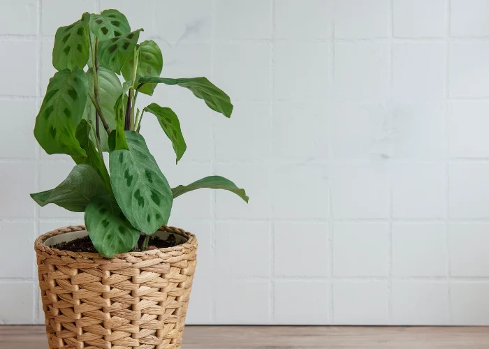

Maranta
A maranta, também conhecida como planta-risca-de-giz ou planta de oração, é uma planta ornamental popular por suas folhas exuberantes e atraentes, que apresentam padrões geométricos marcantes. As folhas da maranta são largas, ovais e geralmente apresentam veios ou manchas em cores que variam de verde-claro a verde-escuro, com detalhes em tons de vermelho, roxo ou rosa. Uma característica única dessa planta é seu comportamento noturno: à noite, suas folhas se erguem como em uma posição de "oração", e durante o dia se abrem novamente, daí seu apelido "planta de oração".
Nativa das florestas tropicais da América Central e do Sul, a maranta prefere ambientes úmidos, com luz indireta e solo bem drenado. Ela é apreciada como planta de interior devido à sua folhagem decorativa e à facilidade de cuidado, desde que receba a quantidade certa de água e umidade. Com o cuidado adequado, pode se tornar um belo complemento para qualquer espaço interno.